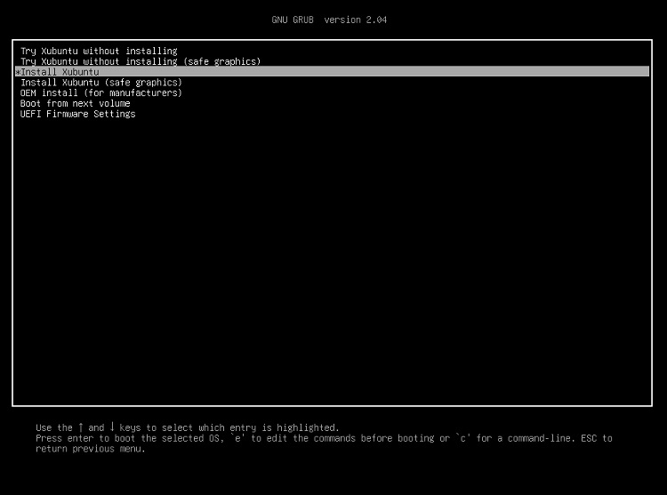
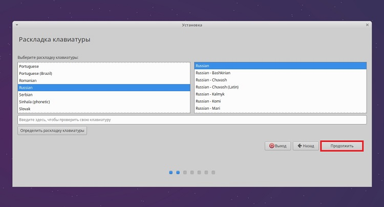
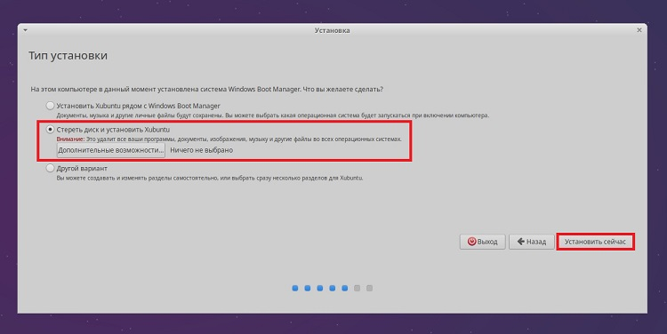
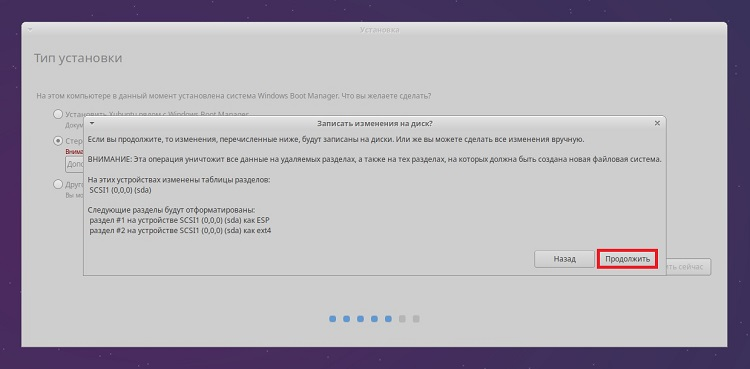
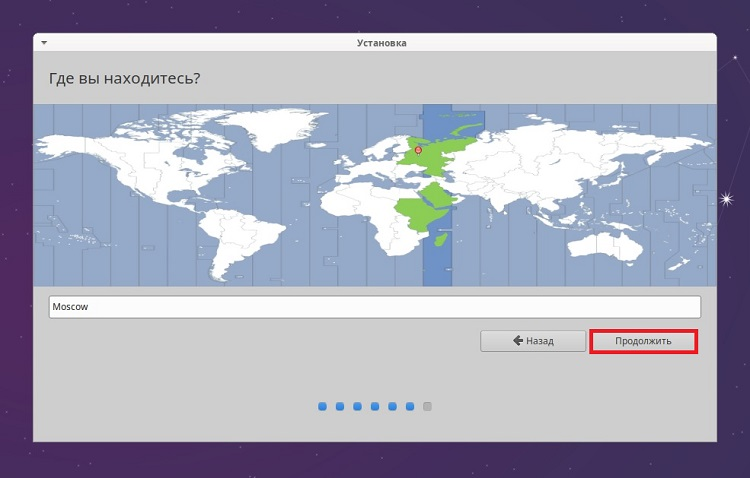
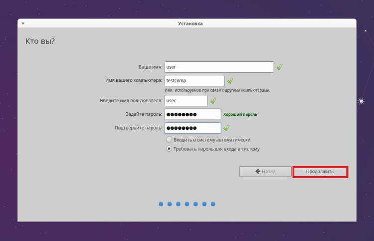

В этой статье представлено краткое руководство по установке с автоматической разметкой дистрибутива Xubuntu,
Начнем с Минимальных системных требований: Xubuntu подходит для компьютеров и ноутбуков со средними и слабыми характеристиками: Минимум 512 МБ ОЗУ для системы x32, рекомендовано — 1 ГБ. Для x64 следует использовать не менее 4 ГБ ОЗУ. Размер жесткого диска должен иметь объем не менее 20ГБ;
Переходим на официальный сайт и скачиваем Xubuntu. Она имеет два варианта. Обычную и lts версии. Обычная выходит два раза в год в октябре и апреле. А lts версия это - Long Term Support — «долгосрочная поддержка». Выходит раз в два года и поддерживается 5 лет. Какую выбрать, решать вам.
После того как скачали образ, проверьте его контрольную сумму. Как это сделать написано здесь. Если контрольные суммы совпадают, можно записать его на какой-нибудь носитель с которого будем устанавливать, например, оптический диск или флешку.Перейдите на сайт Xubuntu и загрузите торрент-файл в соответствии с разрядностью процессора и количеством оперативной памяти. Если ОЗУ имеет объём 4 ГБ и более, нажмите 64-bit systems.
Записывать образ на флешку мы будем с помощью программы Rufus. Скачиваем с официального сайта - RUFUS. После того как скачали и запустили. Нужно:
Видео с примером создания загрузочной флешки.
Что бы начать установку xubuntu с флешки, выставьте в настройках bios/uefi вашей материнской платы загрузку с флешки.
Проделав нужные шаги, вы загрузитесь с установочного носителя и попадете в меню диска, для установки на компьютер Вам нужно выбрать пункт «Install Xubuntu» и нажать «Enter». Однако, если выбрать первый пункт «Try Xubuntu without installing», то система загрузится в Live режиме, где Вы можете посмотреть на систему, протестировать ее, при этом не устанавливая Xubuntu на свой компьютер..
После выбора "INSTALL Xubuntu" запустится меню программы установки, в котором мы выбираем язык и нажимаем «Продолжить».
Теперь же, нам необходимо выбрать раскладку клавиатуры, выбрав нажимаем «Продолжить».
Здесь мы можем отметить пункты:
И в этом случае во время установки дистрибутива у Вас установятся все необходимые обновления и приложения, нужные для работы некоторого оборудования, а также добавится поддержка дополнительных медиа форматов. Далее нажимаем «Продолжить».
Теперь нам необходимо выполнить разметку жесткого диска. Программа установки предлагает нам несколько вариантов:
Сегодня мы рассмотрим чистую установка Xubuntu с автоматическим режимом разметки
Такая установка подойдет, если Вы хотите установить Xubuntu, при этом удалив предыдущую систему и все данные, например, они вам больше не нужны, а система Вам просто надоела или испорчена, Вы можете выполнить чистую установку Xubuntu с удалением всех данных с диска.
Для этого Вам достаточно выбрать пункт «Стереть диск и установить Xubuntu» и нажать «Установить сейчас».
Затем нужно подтвердить изменения, а именно удаление всех данные с диска и создания новых разделов.
На этом разметка диска в автоматическом режиме закончена. В случае с UEFI будет создано два раздела: раздел для загрузки EFI и корневой раздел для системы. В случае с BIOS только корневой раздел.
Сейчас нам нужно настроить часовой пояс, для этого достаточно указать свой регион, дальше ОС сделает все сама.
Нам осталось создать учетную запись пользователя, под которой мы будем работать, для этого вводим имя, имя компьютера, логин и пароль с его подтверждением. Если хотите входить в систему автоматически без ввода пароля, то можете поставить галочку «Входить в систему автоматически».
Теперь начнется установка, которая продлиться не более 15 минут. После установки вам предложат перезагрузить компьютер и загрузиться с помощью жесткого диска, а не флешки.Перезагружаемся и готово.
Более подробную информацию по установке вы сможете найти на сайте: Заметки IT специалиста
Спасибо им за скриншоты:)